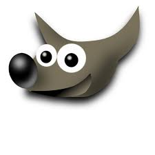
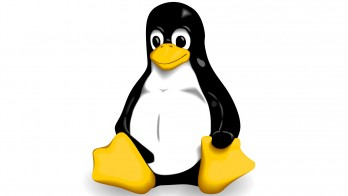
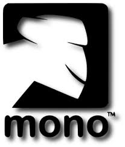
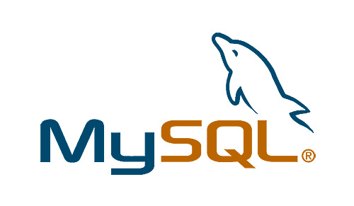
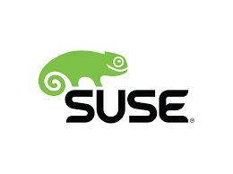

Sofware Libre
Definiciones basicas
Sofware libre
La definicion de sofware libre estipula los criterios que se tienen que cumplir para que un programa sea considerado libre..
De vez en cuando modificamos esta definicion para clarificar o para resolver problemas sobre cuestiones delicadas.>
Más abajo en esta pagina, es la seccion Historial, se puede consultar las lista de modificaciones que afectan la definicion de sofware libre.
"Sofware libre"
es el sofware que respeta la libertad de los ususarios y la comunidad. En grandes lineas, significa que los usuarios tienen la libertad para ejecutar, copiar, distribuir, estudiar, modificar y mejorar. Es decir, el "sofware libre"
es una cuestion de libertad, no de precio. Para entender el concepto, piense en "libre"
como en "libre expresion"
, no como barra libre.
Promovemosestas libertades porque todos merecen tenerlas. Con estas libertades, los ususarios (tanto individualmente como en forma colectiva) controlan el programa y lo que este hace. Cuando los usuarios no controlan el programa, decimos que dicho programa no es libre, o que es privativo. Un programa que no es libre controla a los usuario, y el programador controla el programa, con lo cual el programa resulta ser un instrumento de poder injusto.
Un programa es sofware libre si los usuarios tienen las cuatro libertades esenciales
La libertad de ejecutar el programa como se desea, con cualquier proposito(libertad 1)
La libertad de estudiar cómo funciona el programa, y cambiarlo para que haga lo que ud quiera (libertad 1 ). el acceso al código fuente
es una condicion necesaria para ello.
la libertad de redistribuir copias para ayudar a su projimo (libertad 2)
la libertad de distribuir copia de sus versiones modificadas a terceros (libertad 3). Esto le permite ofrecer a toda la comunidad la oportunidad de beneficiarse de las modificaciones. El acceso al código fuente es una condicion necesaria para eso
La libertad para distribuir (libertades 2 y 3) significa que ud tiene la libertad para redistribuir copias con o sin modificaciones, ya sea gratuitamente o cobrando una tarifa por la distribucion, a cualquier en cualquier parte. Ser libre de hacer esto significa, entre otras cosas, que no tiene debe que pedir ni pagar ningún permiso para hacerlo.
Mascotas del mundo del sofware libre
Ñu< 
| Un Ñu es el animal representativo del proyecto GNU ya que GNU significa Ñu en ingles. El nombre GNU no se adoptó porque a la persona que comenzó el proyecto (Richard Stallman) le gustase particularmente este animal sino porque GNU es el acrónimo que quiere decir "GNUs Not Unix." |
| Gimp |
Wilber es la mascota de GIMP (GNU Image Manipulation Program) fue creada en 1997 por Thomas Knosmanen y Wilber es un... gimp. A menudo se confunde con un zorro o un ratón pero segun su creador. Wilber es simplementeun gimp. |
| Tux
| la idea de Tux surgió del propioLinus Torvalds, según cuenta, de pequeño le mordio un pinguinito en Australia y desde entonces le parecio un animal simpatico. No hay un origen claro del nombre "Tux" ; algunos dicen que proviene del ingles. Tuxedo que significa esmoquin (siempre se ha dicho que los pinguinos van de esmoquin) y otros dicen que el nombre es una mezcla de Torvald con_Unix. |
| Mono
| Mono es tanto el no,bre como el animal representativo como de un proyecto que pretende ser una implementacion libre de la plataforma.Net |
Perl
| El camello es la imagen del lenguaje Perl desde que apareciese por primera vez en el libro "programing Perl" , curiosamente, el camello de Perl tiene derechos de autor ( la editorial O´Reilly) |
| Mysql>
| El delfin que es parte del logo de Mysql se llama Sakila . Segun los creadores de Mysql, este delfin representa los valores de la compañia y de la base de datos,rapidez, precision, potencia y naturalidad. |
| Suse
| Geeko, asi se llama el simpatico camaleon que es la mascota de la compañia alemana Suse. El nombre fue elegido tras un concurso en el que participron mile de personas y provienedel termino Geek.
(http://es.wikipedia.org/wiki/Geek)
que se podria traducir al castellano como friki |